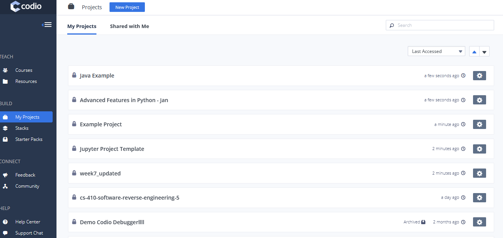
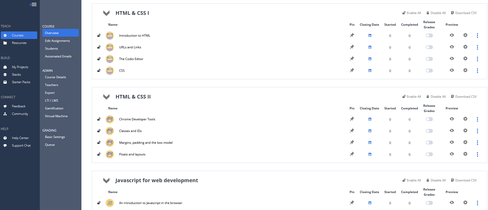

Project or course assignment¶
Before you start to author content you should be aware of the two different places you can create content using guides. Let’s look at each of the ways to create content and why you might choose each one.
Projects¶
A project is simply a standalone Codio box. It may or may not have guides content. Projects are to be found in the My Projects page on the main Codio dashboard.

You would want to choose a project as the place to create your content if you have individual, ad hoc assignments or examples that do not constitute more extensive coursework or are not part of a larger series of associated projects.
A project can be assigned to a course at any time. All the students in that course will then be able to access that project and its content.
There are drawbacks to using projects to assign to students. If you have related projects and the number of projects grows, it can be hard to quickly find a project you want to assign to a course. There is also no way to arrange your projects into chronological order. Courses offer excellent solutions to this organizational problem.
Assignments¶
An assignment is essentially the same as a project. The only difference is that your project assignments are located in the courses area in the main Codio dashboard and accessible to other teachers who can edit the item and to students in the course. Assignments are very easy to locate as they are tidily organized within the course module they belong to. You can also arrange your assignments within a course module.

You would typically use an assignment if either of the following apply.
You have a logically related series of projects that you want to assign to a student that form a course module.
You have a collection of assessments relate to a course that are used for homework, lab assessments, projects etc.
A course allows you to subdivide your course into modules and then chronologically arrange your assignments within your modules. When you create a course, you have to create at least one module. A module does nothing special other than contain assignments and are simply a nice way to group your assignments.